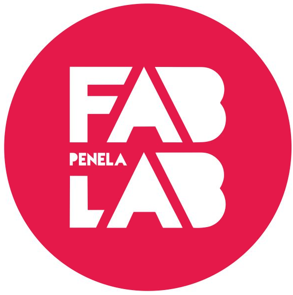

Molding and casting
Make something delicios ;)
Make one make thounsands.
How to scale almost anything.

Early in my career i work for the mould industry, but i never try or think in be a mould maker.
But here i am.
In the beginning i try to think something to my final project, but because the case of the Trashcan Tracker will be changed in the next few week’s i think in something different.
Mould for chocolate’s for my fablab inauguration :)
This solution is good for a beginner because is simpler and allow’s a more step by step approach to this new concept.
So i begin for redesign the mould around the Fablab Penela Logo.
The modelling software i chose is again Rhino because i want to master it.
As always i began the 3D design from the 2D curve’s, Rhino is made for do this so i follow the line of Rhino.
So as many technic’s that Luis Carvão teach me i highlight this:
- Extrudecrv - in order to make a 3D shape.
- Boolean diference - to extract the mould and contra mould.
- Bounding box, to make a box around my 3D shape
- Showedges - Make an edges analysis. It is useful for look for naked edge’s

So after i play with this i finally have my mould, after that i can cast my silicone, and from silicone i can cast my cookie. as you can see.

Milling time
After i design that it’s to milling machine it :)
I pick up the STL from the first block, the madre or in my design the “cera”
I use it in modela, Vplayer. On it i import the STL file, and prepare 6 process with several milling cutter’s

So the first process will be the Roughing1 where we gone remove the biggest part of the material.
I use 2mm square milling cutter.
the cutting parameter’s are the follow

Because our bigger and smaller tool are very different in size 2mm versus 0,1mm. I decide to rough again with 1mm tool.

So after this we can make a first finishing, with the same tool.

After this i found a flow in my design, Penela letter’s have 2mm height, and my finest tool have the same height, so i need to create a surfacing to cut out 0,5mm so i can safely use the tool.

And now here we go to use the finest tool ever :)

Here i first another mistake, i have chose cutting amount of 0.1mm and that amount is the exact size of the tool so it is to much to the tool and a broke one :(
But after i put another i could finish the work.
Another thing i find is, machining time varies a lot with the milling strategies. so for this i chose the contour strategy and the time drop 3 time. Uau 3 times faster incredible.
In modela Vplayer we could estimate the milling time with virtual modela, it helps to control fabrication time.

Final piece :)

Silicone time
So after milling my challenging machinable wax, is time to make the mould in silicone. So first i need to chose the silicone. A food safe one :)
Datasheet of the material link
And it’s a great one because offers a moulding manual. Great! Manual molde making link
So i will need to know how much silicone i gonna need and how much catalyst i will need.
So in for begin i need to make another great command in Rhino. volume.
With this, i peak up the volume of my silicone mould.
After that i made this google sheet in for calculation of the correspondent weight of the silicone and catalyst.
So after this it was very easy. i follow this steps:
- Tare the scale
- weight the compound A
- tare the scale
- weight the compound B
After that stir stir stir…
After stiring, and not scooping ;) i drop the mix into the mould. The mould should be a little bit tilted to not create to much air bubbles.
After this we need the remove the air bubbles left in the mix. So we use the laser machine air compressor in reverse mode to vacuum the remain air.
Luis Carvão and Ferdi have made a kitchen plank and a pirex cup to make the vacuum chamber. :)
After 10 minutes the air bubbles are totally removed
We leave the mix to rest 90min. After that i could take the silicone mould from the wax mould. But i will need to wait more 12h in order to use it with chocolate. as you can see in the silicone datasheet.

CHOCOLATE time :)
And finally i can test the mould with the chocolate. Uau time. At first test i melted the chocolate, from easter eggs of my child’s ;), in the microwave. The i dumped it in the silicone mould. I wait an hour i refrigerator. I want that chocolate will be stiff.

Lesson’s learned.
What i design in 3D in rhino it will become real, and that will affect, material height, configuration of the 3d shape, etc.
When i machine the piece, i must be very aware of the tool height, and the expected tool path.
Silicone is easy, but i need to follow the datasheet.
Chocolate is tricky, and need’s space to flow. If i do it again i will leave some holes in the bottom of the letter’s in the mould to the air escape.
Relief figures is always easy to mould in chocolate inside. I have chose relief for outside but i pay the price, it was more difficult to unmould.
Here is the link to this week files. :)